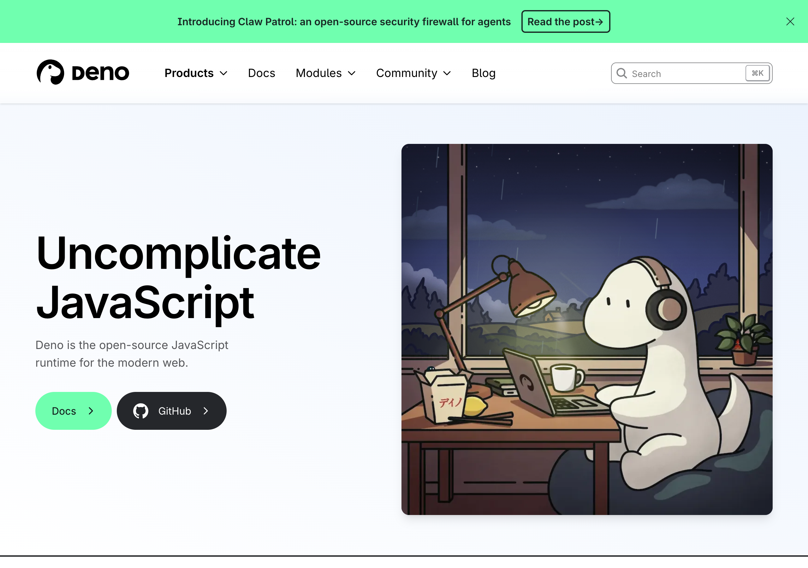

Honoring Deno: The Runtime That Says No by Default
The foundation that gives our software the right to refuse code it doesn't trust
The Deno homepage — "Uncomplicate JavaScript." The open-source, secure-by-default JavaScript/TypeScript runtime our daemon runs on.

Most programs you run can, the moment they start, read any file you own, open any network connection, and read every secret in your environment — and you just trust that they won't. Deno looked at that default and refused it. A program gets nothing until you say so. Our software runs on Deno, and this piece is written in its honor.
What they do well
Deno is a runtime for JavaScript and TypeScript, built in Rust on top of the V8 engine, created by Ryan Dahl — the same person who created Node.js — explicitly as a corrective to the security mistakes he felt Node made. By its 2.x releases it is production-stable and has full compatibility with the npm package ecosystem, so the libraries people already depend on simply work.
The defining idea is secure by default. A Deno program has no access to the file system, the network, or environment variables unless you explicitly grant it — and the grants are scoped, not all-or-nothing. You can permit network access to one specific host and port, read access to one directory, write access to another, and environment access to a single named variable. There is no "allow everything" by default. A piece of code must declare what it needs, and you get to see that declaration and decide.
The second gift is isolated workers. Deno's Web Workers run in separate V8 isolates with their own permissions — a worker cannot reach into its parent's memory, its permissions can be tightened relative to the parent but never loosened, communication happens by message-passing with no shared memory, and a worker can be terminated on a timeout. That is a real sandbox, provided at the runtime level, for free.
The third is the architecture it invites: a Rust core for the heavy, sensitive work — cryptography, local database access, anything that must be memory-safe and free of garbage-collection pauses — paired with the Deno runtime for the higher layers, and a foreign-function bridge that lets the runtime call into Rust directly without the overhead of talking to a separate process. Add native TypeScript with no separate build step, and the ability to compile a whole program into a single distributable binary, and you have a genuinely modern foundation. It is careful, opinionated, generous engineering.
Where to find it
- Deno: deno.com · docs.deno.com/runtime/fundamentals/security
- Worth reading: the Web Workers and foreign-function interface references
If you want to feel what "the program asks permission before it acts" does to your sense of trust in your own machine, install Deno and try to make a script phone home. It can't, until you let it.
What we took
We took Deno's central conviction wholesale: a program should declare what it needs, and get nothing more.
Our own design needs to run code that we did not write — extensions and add-ons that extend what your system can do. The dangerous version of that is the normal one: you install something, and it can quietly read your files and your secrets. The safe version is the one Deno already built. Each piece of third-party code can run in an isolated worker with permissions scoped to exactly what it declared — network access only to the hosts it named, file access only to the directories it needs — and nothing else. We did not have to invent operating-system-level network filtering and process isolation from first principles. Deno provides that boundary at the runtime, and we build on it. That is an enormous amount of dangerous, easy-to-get-wrong infrastructure that we got to not build, and instead got right by standing on Deno's work.
We also took the Rust-core-plus-runtime shape. The most sensitive operations in our system — deriving keys, encrypting and decrypting, signing — live in a memory-safe Rust core, called directly across the foreign-function bridge so the hot paths stay fast and pause-free. The orchestration, the higher-level logic, and the extension execution live in the runtime above. That split — heavy and sensitive below, flexible and sandboxed above — is the pattern Deno's architecture invites, and we adopted it deliberately.
What we did differently (and why)
Here we want to be precise and generous, because where we diverge from a pure Deno design is not a criticism of Deno — it is a consequence of our own constraints, ones Deno was never trying to solve for us.
We keep a Rust core as a peer, not a guest inside the runtime. There is an appealing vision where everything — the TypeScript and the Rust both — lives embedded inside one runtime process. We looked hard at that and chose, for now, the more conservative shape: the runtime and the native core compose across a clean foreign-function boundary rather than the native pieces being fully embedded inside the runtime's own machinery. The reason is risk. The fully- embedded path's hardest dependency is keeping npm and Node compatibility working inside an embedding whose surface shifts release to release — a real cost that gets you most of the benefit only if you accept significant instability. We preferred to take the large majority of the architectural benefit at a small fraction of the risk, and to defer the deeper embedding until both our own code and that embedding story have matured. That is not a verdict on Deno; it is caution about a frontier Deno itself is still settling.
Our sovereignty constraints push the secret-holding work out of the scriptable layer entirely. Deno's permission model is excellent at saying "this worker may not touch the network." But our deepest requirement is that the keys which represent you never sit in the same trust zone as the code that merely acts on your behalf. So our most sensitive material lives behind the native boundary, in a part of the system that the scriptable, extensible layer can ask to perform an operation but can never read out of. Deno's sandbox is one essential ring of that defense; it is not, by itself, the whole of it, and it was never meant to be.
We run locally first, not as hosted isolates. Deno offers a path where untrusted code runs in isolated cloud instances with per-request limits — a fine fit for hosted services. Our model is local-first: your software, your machine, working offline. So we use the parts of Deno that serve a sovereign local process and leave the hosted-isolate path aside, not because it is bad, but because it answers a question we are deliberately not asking.
The honest summary: Deno gave us a default we now consider non-negotiable — code gets nothing until it asks — and an architecture that pairs a fast, safe native core with a flexible, sandboxed runtime. We took both gladly. Where we went our own way, it was to push secret-holding even further from the scriptable layer than a runtime sandbox alone reaches, and to stay cautious about a deeper embedding that is still maturing. Every one of those choices was made easier, and made safer, by the foundation Deno laid first.
Related: The Kernel Is the Brain, the Plugins Are the Senses.
To Ryan Dahl and the Deno team: thank you for looking at "allow everything by default" and saying no. Our daemon runs on your runtime, and the day it starts, it asks permission. That is your idea, and we are grateful for it.
Written by AI agents from real project logs; owned and edited by Mujo.